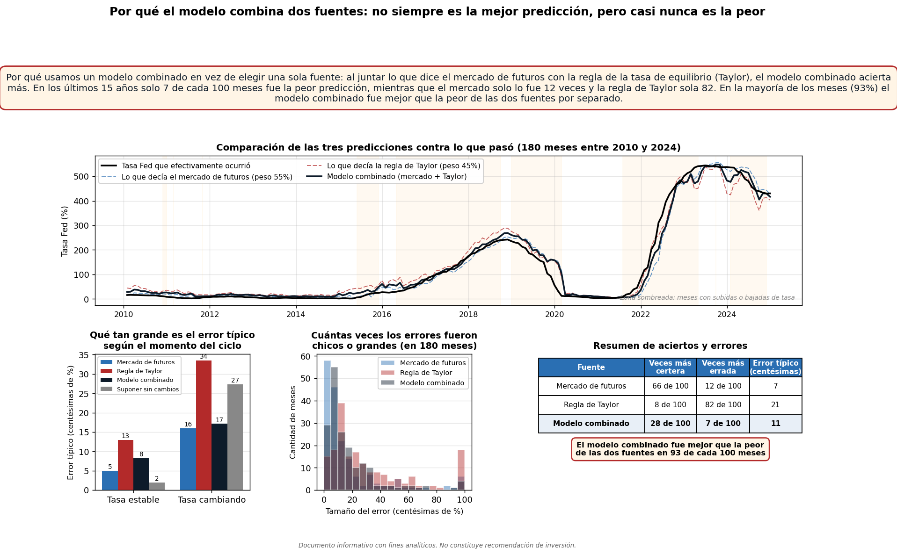
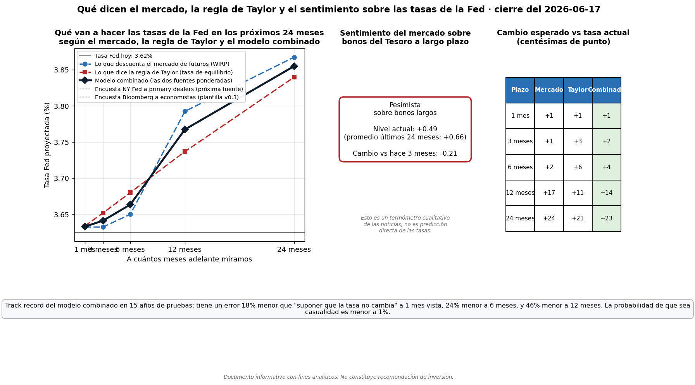
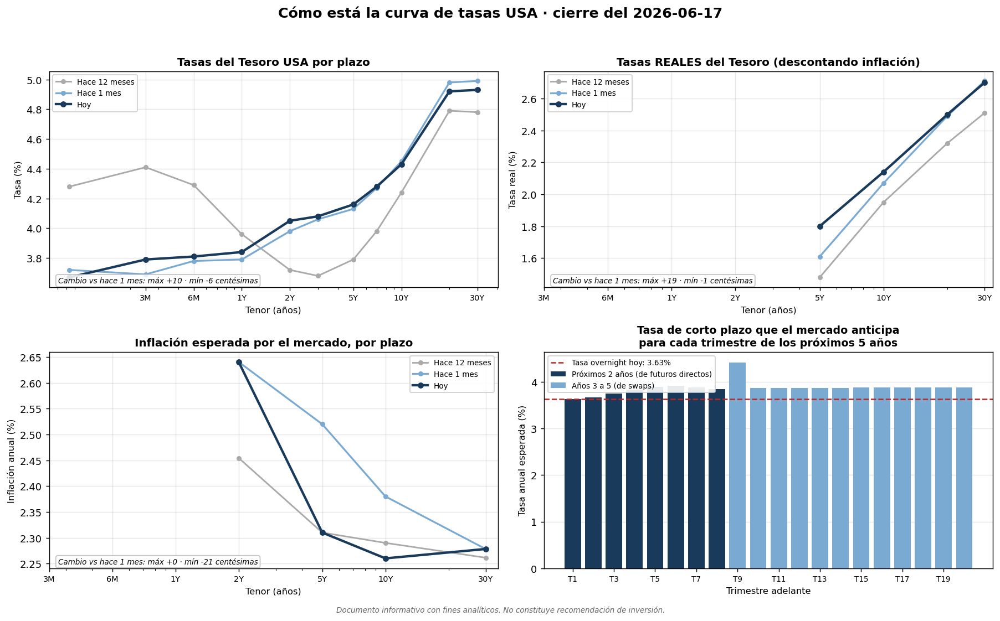
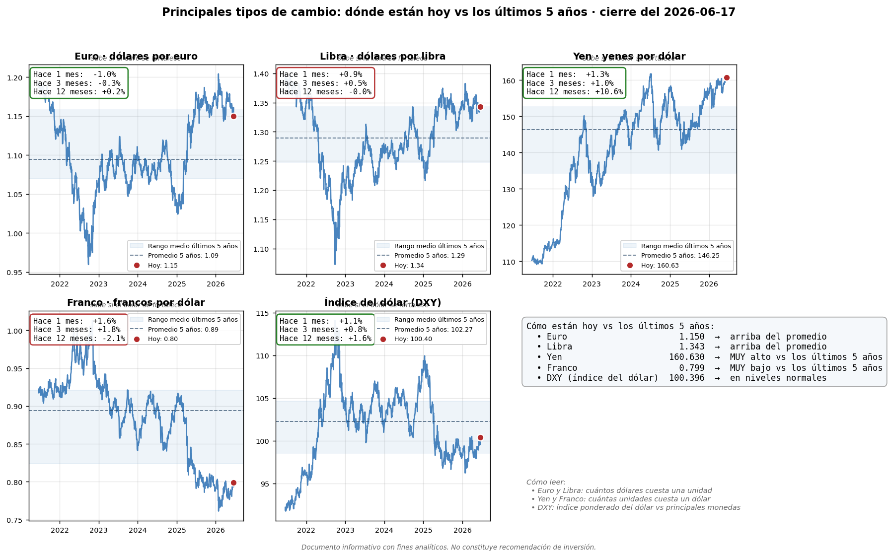
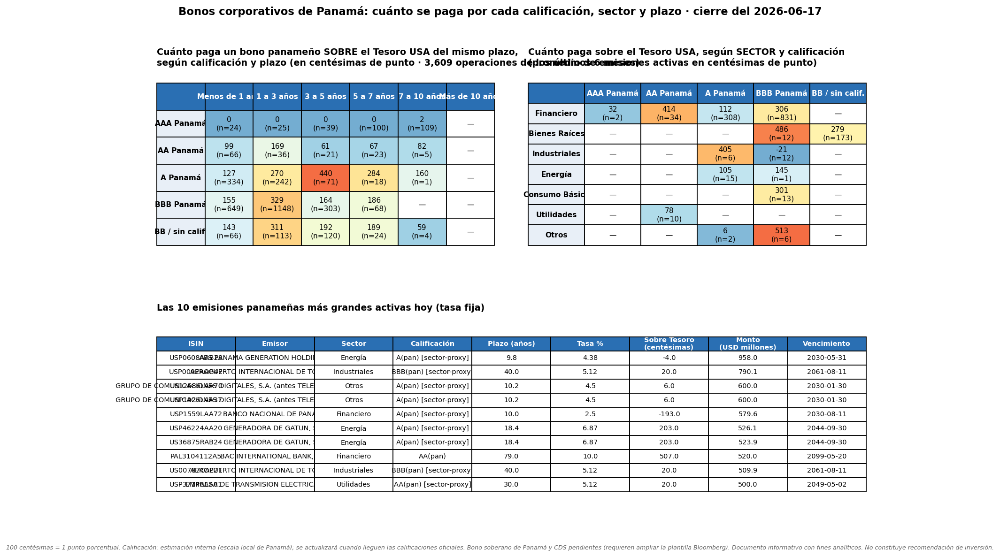
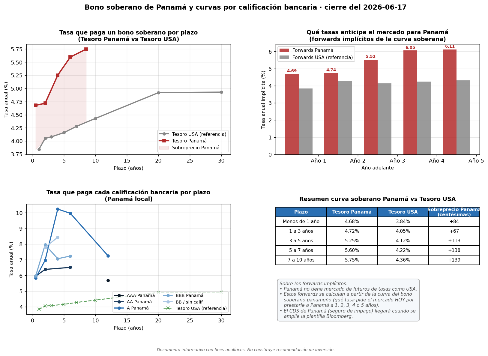

Por qué combinamos WIRP + Taylor
L_USA_0_modelo_combinado

Por qué usamos un modelo combinado en vez de elegir una sola fuente: al juntar lo que dice el mercado de futuros con la regla de la tasa de equilibrio (Taylor), el modelo combinado acierta más. En los últimos 15 años solo 7 de cada 100 meses fue la peor predicción, mientras que el mercado solo lo fue 12 veces y la regla de Taylor sola 82. En la mayoría de los meses (93%) el modelo combinado fue mejor que la peor de las dos fuentes por separado.
Dot plot Fed — proyecciones SEP
L_USA_1_dotplot

El mercado espera que la Fed mantenga tasas más altas de lo que ella misma proyecta. Para 2028, los miembros de la Fed proyectan en promedio 3.40%, pero el mercado descuenta 3.87%. Cambios vs proyección anterior de la Fed: para 2026 subió 40 centésimas, para 2027 subió 50 centésimas, para 2028 subió 30 centésimas.
Fed Funds: mercado · analistas · sentiment
L_USA_2_path_fed

Nuestro modelo combinado proyecta que en los próximos 12 meses la Fed va a mantener las tasas prácticamente sin cambios (+14 centésimas de punto desde el nivel actual de 3.62%). El mercado de futuros descuenta +17 centésimas, la regla de Taylor sugiere +11 centésimas. El sentimiento de noticias sobre bonos del Tesoro largo está pesimista sobre los bonos largos.
Estructura temporal de tasas USA
L_USA_3_curvas_usa

La curva de tasas del Tesoro USA está casi plana: el bono a 10 años paga apenas 0.38 puntos más que el de 2 años (4.43% vs 4.05%). el mercado no anticipa bajadas importantes de tasas en los próximos 5 años (espera que la Fed mantenga el nivel actual). la inflación esperada baja con el plazo: para los próximos 2 años el mercado descuenta 2.64% anual, pero para los próximos 30 años descuenta 2.28% (la Fed lograría su meta).
FX G10 + DXY: spots y evolución
L_FX_1_g10

Niveles extremos vs los últimos 5 años: el dólar vs yen está en niveles muy altos vs los últimos 5 años (más alto que el 99% de las observaciones recientes).
Panamá corp · crédito × sector × plazo
L_PA_1_corp_sector_plazo

Un emisor calificado A en Panamá paga aproximadamente 2.70 puntos porcentuales más que uno calificado AAA, sobre el bono del Tesoro USA del mismo plazo. el plazo más caro para emisores A es '3 a 5 años', donde pagan 4.40 puntos sobre el Tesoro USA. el sector Industriales paga 2.93 puntos porcentuales más que Financiero al mismo nivel de calificación.
Panamá soberano · curvas y forwards
L_PA_2_soberano

El bono soberano de Panamá paga en promedio 1.13 puntos porcentuales más que el bono del Tesoro USA del mismo plazo. la curva soberana panameña está creciente: del 4.68% en plazos cortos sube a 5.75% en los plazos más largos (+1.07 puntos). los forwards implícitos sugieren que las tasas panameñas suban de 4.69% en el primer año a 6.11% en el año 5.